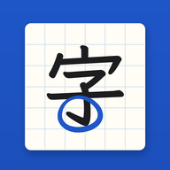

つかいかた
おうちの方へ
ブルポは、この端末の中だけに保存されます（どこにも送られません）。
ブルポが出てくる間隔
練習した日から数えて、この日にまた出てきます。全部つづけて◯なら「おぼえた」になります（✕なら翌日からやり直し）。
ホーム画面に追加
控え（バックアップ）
機種変更のときや、念のために。ブルポは写真なので、枚数が多いと何回かに分けて保存します。
こうしん
いまのバージョン
ぜんぶ けす
ブルポと れんしゅうの きろくを、すべて けします。もとに もどせません。

ブルポは、この端末の中だけに保存されます（どこにも送られません）。
練習した日から数えて、この日にまた出てきます。全部つづけて◯なら「おぼえた」になります（✕なら翌日からやり直し）。
機種変更のときや、念のために。ブルポは写真なので、枚数が多いと何回かに分けて保存します。
ブルポと れんしゅうの きろくを、すべて けします。もとに もどせません。